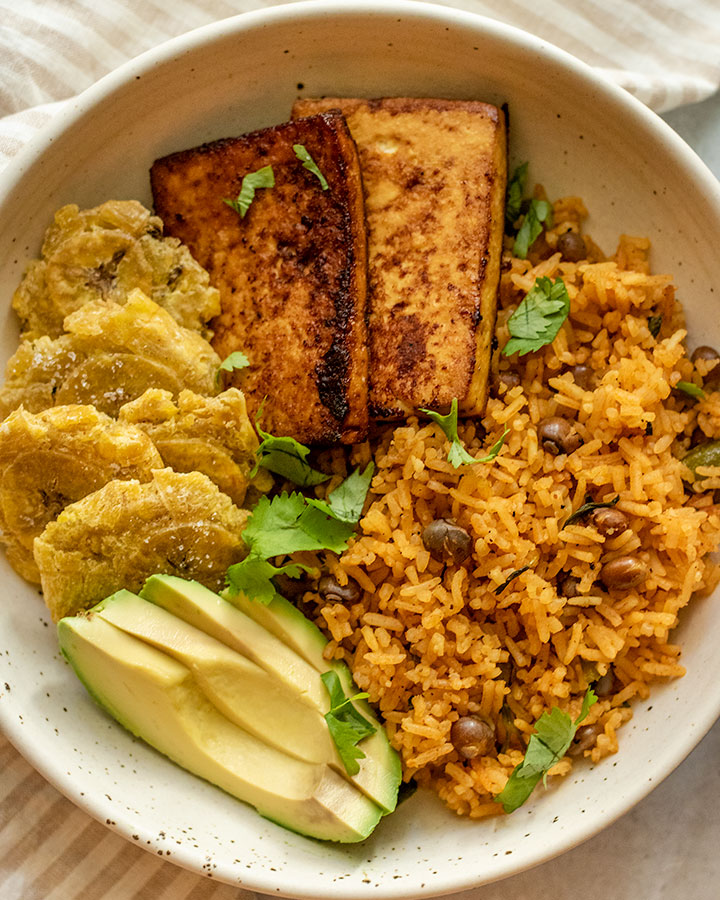

Home
Arroz con guandule

Description
This rice with beans is one the most famous plate in the carribean,
when you eat you will have different flavors, but at the same time,
you are gonna realize, that they all go together.
Ingredients
- Arroz blanco: Mi madre solía preparar su arroz con arroz blanco de grano largo. Con el tiempo, probamos esta receta con arroz jazmín blanco y nos gustó aún más. ntre mi familia y todos con quienes hemos compartido este truco, ya no hemos vuelto a usar otro tipo de arroz.
- Guandú: En inglés, "gandules" significa guandules. Normalmente, puedes encontrar guandules enlatados en la sección de productos latinos de tu supermercado o en l mismo pasillo que otras legumbres.
- Condimento Adobo: Este es el equivalente a una sal sazonada al estilo latino. Generalmente uso la marca Loisa , pero también la puedes encontrar en la sección atina de tu supermercado. Si quieres prepararlo tú mismo, puedes seguir las instrucciones aquí .
- Sazón con Achote: El sazón es otra mezcla de condimentos popular en la cocina latinoamericana y suele encontrarse junto al adobo. Yo uso la marca Loisa , pero lo ás común es encontrarlo en una caja en un sobrecito. El achote es lo que le da al arroz su hermoso tono naranja. Puedes preparar una versión similar aquí .
- Saldo de verduras: Tradicionalmente, este arroz se prepara con caldo de pollo o "sopita". Es muy fácil sustituirlo por cubitos de caldo de verduras.
- Salsa de tomate: Muchas recetas utilizan diferentes tipos de tomate. Mi madre, en particular, usa salsa de tomate enlatada. Tiene un sabor un poco menos intenso ue la pasta de tomate.
- ilantro: Mi madre no siempre le pone mucho cilantro al arroz, pero una de mis tías sí. Ella también cocina los tallos con el arroz, ya que le dan mucho sabor.
Steps
- Place beans in a large pot, and cover with 3 inches of water. Bring to a boil, reduce heat, and simmer 1 1/2 hours, or until tender. Drain, reserving liquid.
-
Heat oil in a large skillet over medium heat. Saute shallot and garlic until fragrant. Stir in cooked beans, and cook for 2 minutes. Measure reserved liquid, and add water to equal 5 cups; stir into skillet. Stir in the uncooked rice. Season with bay leaves, adobo seasoning, salt, pepper, and cloves. Place sprigs of parsley and thyme, and scotch bonnet pepper on top, and bring to a boil. Reduce heat, cover, and simmer for 18 to 20 minutes. Remove thyme, parsley, and scotch bonnet pepper to serve.